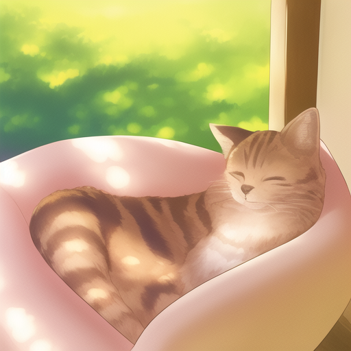
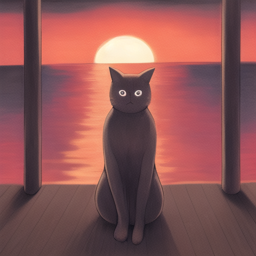
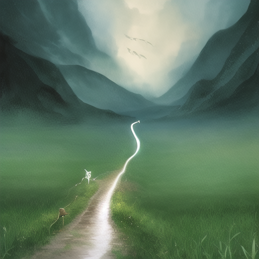
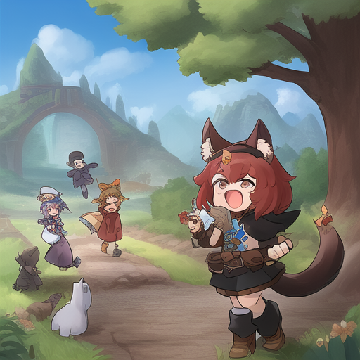
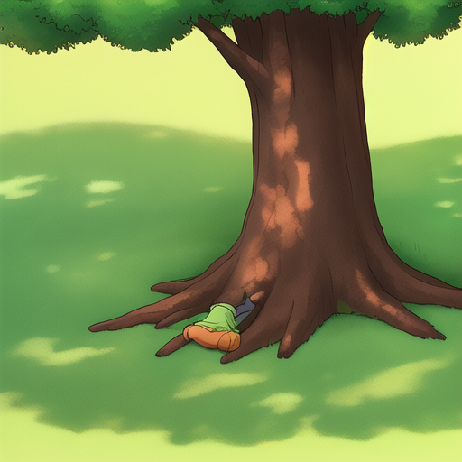
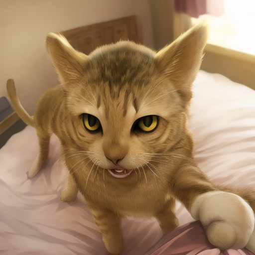
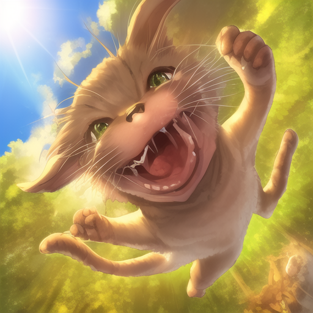
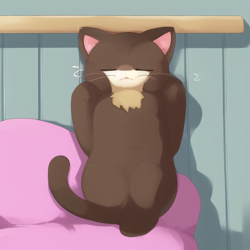

ひなたぼっこと太陽をさがすねこ

あるひ、ねこはひなたぼっこをしていました。

でも、太陽がどこかへいってしまいました。

ねこは太陽をさがしにでかけました。

みちのりはいろいろなできごとがありました。

つかれて、ねこはきのしたでねむりました。

あさになって、ねこはめをさました。

ねこは、あさの太陽をみつけてよろこびました。

ねこは、なにかをもとめるときはねていればいいとわかりました。
ねこは、ひなたぼっこをしながらそれをかんがえました。
そして、しあわせそうにひなたぼっこをしているねこでおわりです。